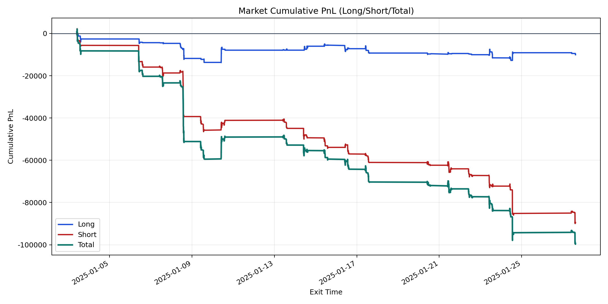
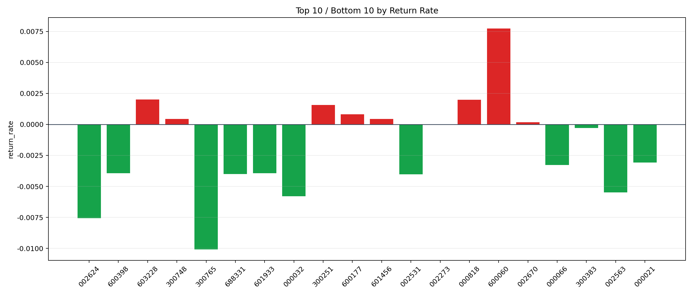

| repo_root | /home/haoranyou/data/output/dynamic_AUM_TAKER_index500 |
|---|---|
| period_months | 1 |
| period_label | 2025-01-03_to_2025-01-27 |
| start_time | 2025-01-03 09:46:52 |
| end_time | 2025-01-27 14:44:32 |
| n_trades | 4013 |
| n_symbols | 39 |
| total_pnl | -99531.8864000005 |
| long_total_pnl | -10086.45594999976 |
| short_total_pnl | -89445.43045000073 |
| total_entry_notional | 73960176.99999999 |
| long_entry_notional | 21496039.0 |
| short_entry_notional | 52464138.0 |
| total_return_rate | -0.0013457497052772132 |
| long_return_rate | -0.0004692239323719016 |
| short_return_rate | -0.0017048870687630612 |
| top_symbols_by_return | ["600060", "603228", "000818", "300251", "600177", "601456", "300748", "002670", "002273", "300383"] |
| bottom_symbols_by_return | ["300765", "002624", "000032", "002563", "002531", "688331", "601933", "600398", "000066", "000021"] |

